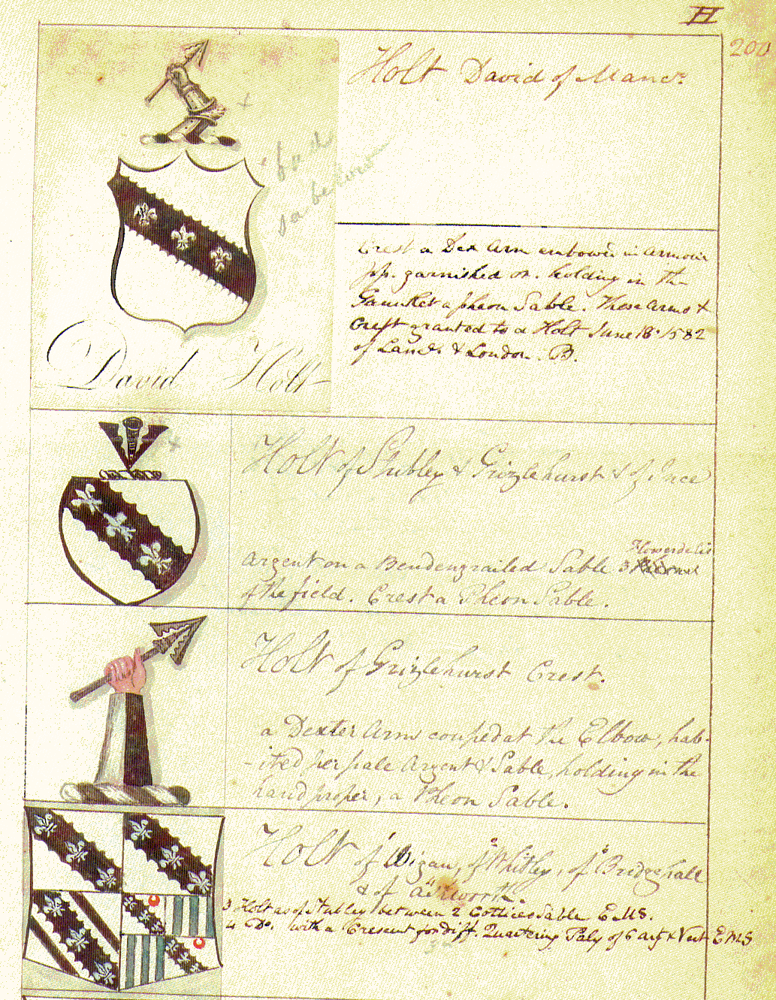

Lee's Heraldica Lancastria original arms manuscript
A page taken from Lee's Heraldica Lancastria shows the arms of the Holt families.
The four holders of arms are displayed below:
David Holt of Manchester — Granted to a Holt, 18 June 1582, of Lancs and London
Holt of Stubley and Grizlehurst and of Ince
Holt of Grizlehurst
Holt of Wigan, of Whitley, of Bridgehall and of Ashworth
